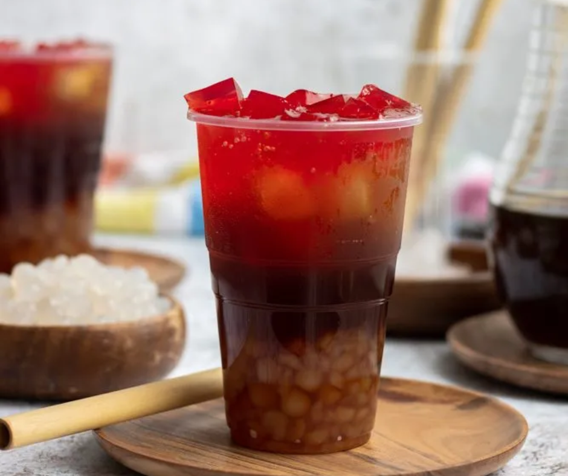

Gulaman

Gulaman
Ingredients
- Unflavorfed black or red gulaman.
- Brown sugar
- Banana flavoring
- Ice
Steps
- Cook gulaman according to instructions. Set aside.
- Add 2 cups of sugar to 8 cups of boiling water. Cook until combined.
- Add 3 drops of banana flavoring.
- Turn off heat. Set aside to cool.
- Slice gulaman into cubes.
- In a tall glass, add the syrup and gulaman.
- Serve with ice.
Home